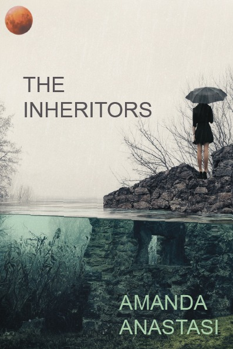
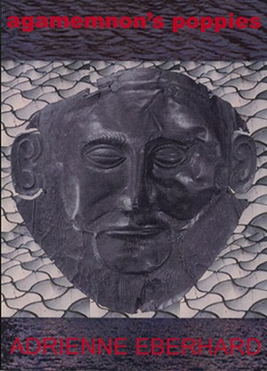

Featured

Sideshow History
Jennifer HarrisonJennifer Harrison has always been interested in performers, their choices and vulnerabilities. In her new collection, Sideshow History, she shows us the risk of being a public performer where the artist is continually under pressure of being seen to fail or succeed.

The Inheritors
Amanda AnastasiThe inheritors are those who will suffer the ravages of climate change, be they human, creature or plant.
The Strangest Place
Stephen EdgarThe strangest place, this world of fact and figment we astonishingly find ourselves inhabiting, is the territory that Stephen Edgar’s poetry has been probing and framing for over four decades now.

Agamemnon’s Poppies
Adrienne EberhardAdrienne Eberhard’s poetry is attached to her native Tasmanian landscape and attracted to the mythical landscapes of other ancient lands. Her poems move from sexual intimacy and birth to events of exile, travel and consequence.